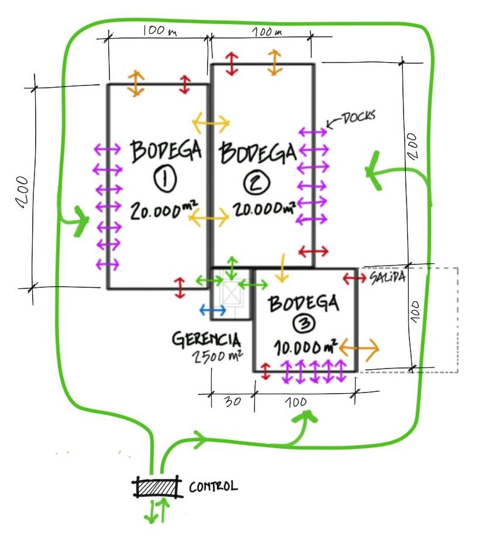

Contrato ancla
a 25 años
Qué implica para Éxito firmar y recibir esta bodega, si lo que entrega la presentación (centro logístico Medellín Sur, 50.000 m², estructura espacial) es lo que quedará en pie. Se contrasta lo prometido con lo que muestran los planos de la propia presentación y con el análisis técnico del sistema.
Esto es un análisis técnico, no asesoría legal ni financiera. Las cifras de costo y de mantenimiento son modelos con supuestos declarados, no cotizaciones. La decisión corresponde a Éxito con sus áreas jurídica, financiera, de riesgos y de operaciones.
Doce puntos
para firmar
Cada fila compara lo que dice la presentación (con el número de diapositiva) con lo que se ve en sus dibujos o en el análisis, y qué debería exigir Éxito.
La nave
con sus columnas
La presentación vende "100 m de libertad logística" y "sin columnas". Las dos secciones muestran otra cosa. Para Éxito importa porque el layout de racks y el flujo de equipos se diseñan sobre esa retícula.


Qué cambia para el inquilino
Con una línea de columnas en el centro, cada nave queda como dos bodegas de unos 50 m de ancho unidas por el techo. Los pasillos de racks, los muelles y las zonas de picking se acomodan alrededor de unas 9 a 10 columnas por nave, a 22 a 26 m una de otra.
Hay un segundo efecto, estructural. Esas columnas son pocas y del mismo sistema: cada una sostiene del orden de 2.000 m² de techo. Si una falla o se saca para reconfigurar el layout, la luz pasa de unos 48 m a unos 96 m en esa zona, y la relación luz/peralte sube de 31 a unos 62, fuera de cualquier rango citado.
En el esquema se puede hacer clic en una columna para quitarla y ver el efecto.
Esquema de una nave de 100 × 200 m (eje central)
Esquema, no plano: las 9 posiciones están a 22,4 y 25,6 m según la Sección BB y deben confirmarse con la planta oficial. La carga es un supuesto de orden de magnitud (peso propio ≈ 0,31, cubierta y equipos, carga viva 0,50) sin factores de continuidad.

Altura que promete la lámina
Diap. 2: 12 a 14 m y "7 a 8 niveles de paletización". Sección AA: 13 m libres. Diap. 24: sobre los nodos se cuelgan rociadores, ductos, iluminación y pasarelas.
Altura por nivel: la altura libre menos 1,0 m para rociadores y tuberías bajo la malla (supuesto), dividida entre niveles. La referencia real viene del proveedor de racks y de la norma de rociadores de la aseguradora.
Lo que cuesta
mantenerla
La presentación dice "mantenimiento mínimo": la membrana FiberTite no necesita repintado en más de 15 años. Eso es la cubierta sintética. La estructura galvanizada es otra cosa, y su costo cae tarde.
Modelo base (aproximación con precios unitarios supuestos, no cotizaciones): 15 campañas de inspección de 100 millones, 60 millones por año de correctivos, repintado del 25 % en el año 15 (1.800 millones) y repintado total en el año 25 (7.200 millones). Suma: 12.000 millones de pesos a 25 años, unos USD 3,7 M a 3.273 COP/USD.
Lo importante para el contrato es el calendario: el 60 % cae en el año 25, justo cuando termina el arriendo. Quien firme sin cláusula de reparto deja el repintado grande a quien esté en ese momento.
El zinc con 55 µm dura entre 13 y 26 años en ambiente C4 y entre 26 y 79 años en C3 (ISO 9223). Si el ambiente de Caldas resulta C4, el repintado total se adelanta a unos 13 años. Es el segundo escenario del gráfico.
Costo acumulado de mantenimiento de la estructura
Fuego
y agua
Fuego: el ahorro anunciado
La presentación anuncia un "ahorro directo de hasta USD 5 M frente a cerchas convencionales" (diap. 29). La tabla de la presentación da 10,5 a 11,0 M para la malla y 13 a 16 M para cerchas: una diferencia de 2,0 a 5,5 M.
Ninguna cifra incluye protección contra fuego. Cada nave de 20.000 m² supera el límite del tipo de riesgo moderado de la NSR-10 (13.300 m² por edificio), así que, salvo compartimentación, cae en el tipo alto: 180 minutos en columnas y cerchas y 90 en cubierta. El zinc se funde hacia 420 °C y un tubo desnudo alcanza esa temperatura en unos 2 a 5 minutos de incendio estándar.
La pintura intumescente cuesta más en tubos delgados (A/V alto). Un modelo térmico calibrado con CYPE da unos USD 4,0 M para R60 y unos 6,7 M para R90 sobre unos 30.700 m² de tubo. Pero la alternativa de cerchas también necesita protección, con perfiles más gruesos y menos superficie. Por eso el gráfico permite ajustar ese supuesto.
Aquí interviene también la aseguradora: suele exigir una clasificación de riesgo y rociadores diseñados para la altura y la carga de fuego. Eso debe aclararse antes de firmar, no después.
Ahorro anunciado frente a lo que falta (USD millones)
Fuego: modelo térmico calibrado con CYPE (R60: 3,5 a 6,1 M, R90: 6,3 a 11,5 M en percentiles 10 a 90). Mantenimiento: 12.000 millones COP, supuesto. TRM 3.273,49. Son aproximaciones: variarán con precios y cotizaciones reales.
Agua: cubierta horizontal en Caldas
La Sección AA se diseña con "cubierta totalmente horizontal" (diap. 17), y el drenaje es un canalón de 400 mm con bajantes de 5" (diap. 27). Caldas recibe 2.523 mm al año y llueve unos 226 días.
Un milímetro de agua sobre una nave de 20.000 m² pesa 20 toneladas. Con 51 mm se igualan los 0,50 kN/m² de carga viva de cubierta: 1.020 toneladas. El número de bajantes sale del caudal: a 100 mm/h, una nave de 20.000 m² recibe unos 556 L/s.
El caudal por bajante y la intensidad son supuestos: el diseñador hidráulico debe presentar su cálculo.
Lluvia intensa sobre una nave
14 meses
¿desde cuándo?
El plan de trabajo (diap. 28) tiene cuatro fases de 2, 3, 7 a 8 y 6 meses: sumadas dan 18 a 19. Para llegar a 14 se solapan. Y no aparece nada de lo que debe pasar antes y después.
Cronograma de la presentación y lo que falta
Solapes elegidos para sumar 14 meses (lectura del plan): diseño 0 a 2, acopio 1 a 4, fabricación 3 a 10,5, montaje 8 a 14. Las barras rayadas no tienen plazo en la presentación; la duración de los trámites y de las pruebas la fija el contrato.
Qué no figura
- Autorización del sistema no convencional (Ley 400, art. 13). Sin ella, multa de unos 250 SMMLV y riesgo de suspensión.
- Licencia de construcción y revisión independiente del diseño estructural.
- Estudio geotécnico: la diap. 27 habla de limos y arcillas saturadas en la zona sur.
- Ensayos de nodos y tornillos por lotes: del orden de 220 a 290 ensayos para unos 9.800 nudos (90 % de confiabilidad, 90 a 95 % de confianza, sin fallas).
- Protección contra fuego aplicada y certificada, y rociadores recibidos por la aseguradora.
- Pruebas de estanqueidad y de drenaje antes de la recepción.
Qué debe entregar el proveedor
- Memoria de cálculo firmada con una sola geometría (módulo 3,20 m y peralte único).
- Planos "as built" y registro de trazabilidad de cada lote de nudos y tubos.
- Medición de espesor de zinc por muestreo y plan de mantenimiento a 25 años.
- Manual de uso: cargas máximas de colgado en nodos (rociadores, ductos, paneles solares).
- Garantías y pólizas con plazo acorde al contrato, no solo a la obra.
Qué pedir
por área
Cada condición se puede marcar como resuelta. El texto de lo pendiente se puede copiar para circularlo entre el equipo y el proveedor.